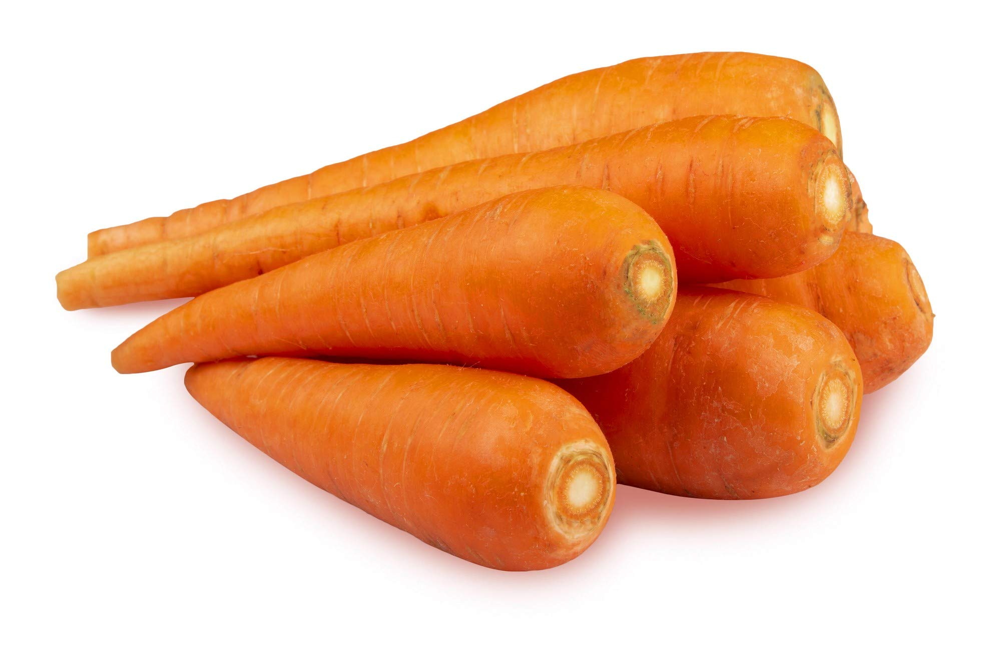
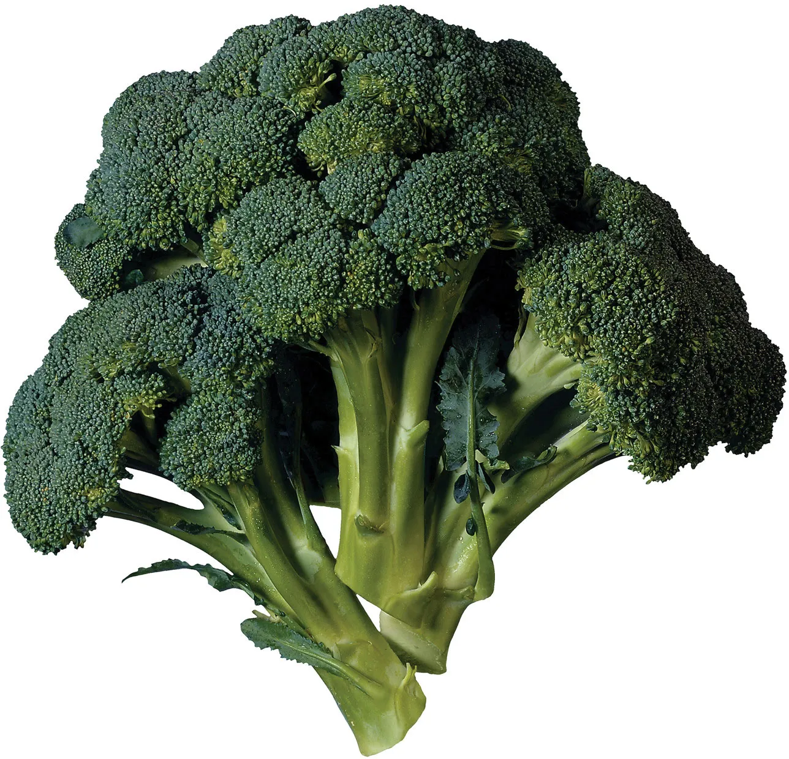

Vegetables Page
Vegetables Page

Carrot
Carrots are rich in vitamin A, antioxidants, and fiber. They're great for salads, soups, and as a healthy snack.

Broccoli
Broccoli is packed with vitamins, minerals, and fiber. It's great steamed, roasted, or added to stir-fries.

Spinach
Spinach is rich in iron, vitamins, and antioxidants. It's perfect for salads, smoothies, and cooked dishes.

Tomato
Tomatoes are rich in vitamin C and lycopene. They're versatile and can be used in salads, sauces, and sandwiches.